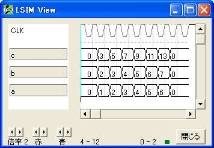

目次
●機能実行
◎概要
◎書き方と使い方
◎LSIM以外での使い方
○実効譜と機能実行譜
○テストベンチ
|
機能実行
機能実行は素子の遅延を考慮しない機能シミュレーションにあたりますが、方法が従来のテストベンチと違いますので概要で説明します。
機能実行譜の書き方は固有のものもありますが、基本的に論理設計なので実効譜と同じ文法で書きます。

概要
L言語は LTOOL
で提供される論理設計プログラム群で開発を行います。これはコンパイラ、シミュレータ、ビューワの3種類のプログラムから成っています。この中でシミュレータとビューワの開発を先に行いました、コンパイラは最後に完成しました。
シミュレータとビューワは
L言語ではない言語の出力していた論理式をシミュレーションして閲覧するために開発を始めたのですが、完成してみると設計したロジックにデータを供給して駆動する方法が従来のテストベンチでもシミュレータの画面から直接入力する方法でも大規模な設計には使えないことが分かりました。
そこでロジックを論理設計して作るように
検証データ
もロジックで作らせたらどうかと考えたわけです。さらに進めて、設計したロジックと検証するロジックをひとつにして駆動したらシミュレータ上でクロックを与えるだけで設計ロジックの振る舞いが観察できると分かりました。
この方法ならテストベンチに設計ロジックと検証ロジックのひとつになったものを指定してクロックを与えるだけですから、他の言語の開発環境でも同様のシミュレーションをさせることができます。
書き方と使い方
機能実行譜をつけた論理譜は下のように書きます。
{ =============================================== }
{ 論理譜 }
{ =============================================== }
logicname sample
{ ----------------------------------------------- }
{ 手続き譜 }
{ ----------------------------------------------- }
procedure add
input a[4];
input b[4];
output c[4];
c=a+b;
endp
{ ----------------------------------------------- }
{ 実効譜 }
{ ----------------------------------------------- }
entity main
input a[4],b[4];
output c[4];
c=add(a,b);
ende
{ ----------------------------------------------- }
{ 機能実行譜 }
{ ----------------------------------------------- }
entity sim {機能実行譜は sim の名前にします。}
output a[4],b[4];
output c[4];
bitr tc[5];
part main(a,b,c) {実効譜の引用}
tc=tc+1;
switch(tc)
case 5: a=1; b=2;
case 6: a=2; b=3;
case 7: a=3; b=4;
case 8: a=4; b=5;
case 9: a=5; b=6;
case 10: a=6; b=7;
endswitch
ende
endlogic
|
| コマンド |
|
LSIM .LBL |
- LDC sample -ls
- SIM t1.sim
- VIEW
|
|
c.3-0
b.3-0
a.3-0
|
上の LSIM .LBL を使ってコマンドを実行して得られた結果が下です。 
LSIM以外での使い方
LSIM以外のシミュレータで検証する場合は下のように書いておきます。 初期化されない記憶信号は simres
で同様の条件付けをした方が良いでしょう。 LSIMと共用はできませんが simres=0 を入れるとLSIM でも使えます。
entity sim
output a[4],b[4];
output c[4];
bitr tc[5];
input simres; {追加}
{ simres=0 } {注釈を外すとLSIMでも使えます。}
part main(a,b,c)
if (!simres) tc=tc+1; endif {条件を付ける}
switch(tc)
case 5: a=1; b=2;
case 6: a=2; b=3;
case 7: a=3; b=4;
case 8: a=4; b=5;
case 9: a=5; b=6;
case 10: a=6; b=7;
endswitch
ende
|
下はコンパイラに -vh オプションを指定して VHDL のファイルを出力させたものです。
実効譜と機能実行譜
実効譜の e0.vhd はチップ化に使います。 機能実行譜の e1.vhd とテストベンチの s1.vhd
でチップ化する設計環境のシミュレータで機能検証できます。
| 実効譜 e0.vhd |
|
機能実行譜 e1.vhd |
library IEEE;
use IEEE.std_logic_1164.all;
entity main is
port(a0 : in std_logic;
b0 : in std_logic;
a1 : in std_logic;
b1 : in std_logic;
a2 : in std_logic;
b2 : in std_logic;
c0 : out std_logic;
c1 : out std_logic;
c2 : out std_logic;
c3 : out std_logic;
a3 : in std_logic;
b3 : in std_logic);
end main;
architecture RTL of main is
signal n_n18 : std_logic ;
signal n_n19 : std_logic ;
signal n_n20 : std_logic ;
begin
n_n18 <= (a0 and b0) ;
n_n19 <= (not a1 and b1 and a0 and b0)
or (a1 and not b1 and a0 and b0)
or (a1 and b1) ;
n_n20 <= (not a2 and b2 and n_n19)
or (a2 and not b2 and n_n19)
or (a2 and b2) ;
c0 <= (not a0 and b0)
or (a0 and not b0) ;
c1 <= (not a1 and not b1 and a0 and b0)
or (not a1 and b1 and not n_n18)
or (a1 and not b1 and not n_n18)
or (a1 and b1 and a0 and b0) ;
c2 <= (not a2 and not b2 and n_n19)
or (not a2 and b2 and not n_n19)
or (a2 and not b2 and not n_n19)
or (a2 and b2 and n_n19) ;
c3 <= (not a3 and not b3 and n_n20)
or (not a3 and b3 and not n_n20)
or (a3 and not b3 and not n_n20)
or (a3 and b3 and n_n20) ;
end RTL;
|
|
library IEEE;
use IEEE.std_logic_1164.all;
entity sim is
port(clk : in std_logic; ← クロック
sim_a0 : out std_logic;
sim_b0 : out std_logic;
sim_a1 : out std_logic;
sim_b1 : out std_logic;
sim_a2 : out std_logic;
sim_b2 : out std_logic;
sim_c0 : out std_logic;
sim_c1 : out std_logic;
sim_c2 : out std_logic;
sim_c3 : out std_logic;
sim_a3 : out std_logic;
sim_b3 : out std_logic;
simres0 : in std_logic); ← 初期化
end sim;
architecture RTL of sim is
signal n_n40 : std_logic ;
signal n_n41 : std_logic ;
signal n_n42 : std_logic ;
signal n_n43 : std_logic ;
signal n_n44 : std_logic ;
signal n_n18 : std_logic ;
signal n_n19 : std_logic ;
signal n_n20 : std_logic ;
signal n_n54 : std_logic ;
signal n_n55 : std_logic ;
signal n_n56 : std_logic ;
signal a0 : std_logic ;
signal b0 : std_logic ;
signal a1 : std_logic ;
signal b1 : std_logic ;
signal a2 : std_logic ;
signal b2 : std_logic ;
signal c0 : std_logic ;
signal c1 : std_logic ;
signal c2 : std_logic ;
signal c3 : std_logic ;
signal a3 : std_logic ;
signal b3 : std_logic ;
begin
process(clk) begin
if (clk' event and clk='1') then
n_n40 <= (not n_n40 and not simres0) ;
n_n41 <= (not n_n41 and n_n40 and not simres0)
or (n_n41 and not n_n40 and not simres0) ;
n_n42 <= (not n_n42 and n_n41 and n_n40 and not simres0)
or (n_n42 and not simres0 and not n_n54) ;
n_n43 <= (not n_n43 and n_n42 and n_n41 and n_n40 and not simres0)
or (n_n43 and not simres0 and not n_n55) ;
n_n44 <= (not n_n44 and n_n43 and n_n42 and n_n41 and n_n40 and not simres0)
or (n_n44 and not simres0 and not n_n56) ;
end if;
end process;
n_n18 <= (a0 and b0) ; ← 実効譜
n_n19 <= (not a1 and b1 and a0 and b0)
or (a1 and not b1 and a0 and b0)
or (a1 and b1) ;
n_n20 <= (not a2 and b2 and n_n19)
or (a2 and not b2 and n_n19)
or (a2 and b2) ;
c0 <= (not a0 and b0)
or (a0 and not b0) ;
c1 <= (not a1 and not b1 and a0 and b0)
or (not a1 and b1 and not n_n18)
or (a1 and not b1 and not n_n18)
or (a1 and b1 and a0 and b0) ;
c2 <= (not a2 and not b2 and n_n19)
or (not a2 and b2 and not n_n19)
or (a2 and not b2 and not n_n19)
or (a2 and b2 and n_n19) ;
c3 <= (not a3 and not b3 and n_n20)
or (not a3 and b3 and not n_n20)
or (a3 and not b3 and not n_n20)
or (a3 and b3 and n_n20) ;
n_n54 <= (n_n41 and n_n40 and not simres0) ;
n_n55 <= (n_n42 and n_n41 and n_n40 and not simres0) ;
n_n56 <= (n_n43 and n_n42 and n_n41 and n_n40 and not simres0) ;
a0 <= (n_n40 and not n_n41 and not n_n42 and n_n43 and not n_n44) ← 検証データ
or (n_n40 and n_n42 and not n_n43 and not n_n44) ;
a1 <= (not n_n40 and n_n41 and not n_n42 and n_n43 and not n_n44)
or (n_n41 and n_n42 and not n_n43 and not n_n44) ;
a2 <= (not n_n41 and not n_n42 and n_n43 and not n_n44)
or (not n_n42 and n_n43 and not n_n44 and not n_n40) ;
a3 <= ('0') ;
b0 <= (not n_n40 and n_n41 and n_n42 and not n_n43 and not n_n44)
or (not n_n40 and not n_n42 and n_n43 and not n_n44) ;
b1 <= (n_n40 and not n_n41 and n_n42 and not n_n43 and not n_n44)
or (not n_n40 and n_n41 and n_n42 and not n_n43 and not n_n44)
or (n_n40 and not n_n41 and not n_n42 and n_n43 and not n_n44)
or (not n_n40 and n_n41 and not n_n42 and n_n43 and not n_n44) ;
b2 <= (n_n40 and n_n41 and n_n42 and not n_n43 and not n_n44)
or (not n_n41 and not n_n42 and n_n43 and not n_n44)
or (not n_n40 and not n_n42 and n_n43 and not n_n44) ;
b3 <= ('0') ;
sim_a0 <= a0 ; ← 閲覧信号
sim_b0 <= b0 ;
sim_a1 <= a1 ;
sim_b1 <= b1 ;
sim_a2 <= a2 ;
sim_b2 <= b2 ;
sim_c0 <= c0 ;
sim_c1 <= c1 ;
sim_c2 <= c2 ;
sim_c3 <= c3 ;
sim_a3 <= a3 ;
sim_b3 <= b3 ;
end RTL;
|
テストベンチ
テストベンチ s1.vhd は機能実行譜 e1.vhd に対して用います。 機能実行譜があるときに VHDL Verilog ABEL
の出力を指定したときはテストベンチも作られます。
テストベンチのステップ数はコンパイラのオプションで指定できます、 500
ステップにしたいときは -sp 500 とします。
| テストベンチ s1.vhd |
library IEEE;
use IEEE.std_logic_1164.all;
entity TESTBENCH is
end TESTBENCH ;
architecture behavior of TESTBENCH is
component sim ← 機能実行譜を引用します。
port(clk : in std_logic;
sim_a0 : out std_logic;
sim_b0 : out std_logic;
sim_a1 : out std_logic;
sim_b1 : out std_logic;
sim_a2 : out std_logic;
sim_b2 : out std_logic;
sim_c0 : out std_logic;
sim_c1 : out std_logic;
sim_c2 : out std_logic;
sim_c3 : out std_logic;
sim_a3 : out std_logic;
sim_b3 : out std_logic;
simres0 : in std_logic);
end component ;
constant CLK_CYCLE : Time := 20 ns ;
signal clk : std_logic ;
signal simres0 : std_logic ;
signal sim_a0 : std_logic ;
signal sim_b0 : std_logic ;
signal sim_a1 : std_logic ;
signal sim_b1 : std_logic ;
signal sim_a2 : std_logic ;
signal sim_b2 : std_logic ;
signal sim_c0 : std_logic ;
signal sim_c1 : std_logic ;
signal sim_c2 : std_logic ;
signal sim_c3 : std_logic ;
signal sim_a3 : std_logic ;
signal sim_b3 : std_logic ;
begin
unit : sim port map (
clk => clk,
sim_a0 => sim_a0,
sim_b0 => sim_b0,
sim_a1 => sim_a1,
sim_b1 => sim_b1,
sim_a2 => sim_a2,
sim_b2 => sim_b2,
sim_c0 => sim_c0,
sim_c1 => sim_c1,
sim_c2 => sim_c2,
sim_c3 => sim_c3,
sim_a3 => sim_a3,
sim_b3 => sim_b3,
simres0 => simres0);
process begin
clk <= '1';
wait for CLK_CYCLE/2;
clk <= '0';
wait for CLK_CYCLE/2;
end process;
process begin
simres0 <= '0';
wait for CLK_CYCLE*2;
simres0 <= '1';
wait for CLK_CYCLE*5; ← 5クロック simres を 1 にする。
simres0 <= '0';
wait for CLK_CYCLE*30; ← 30クロック 供給する。
end process;
end;
|
|